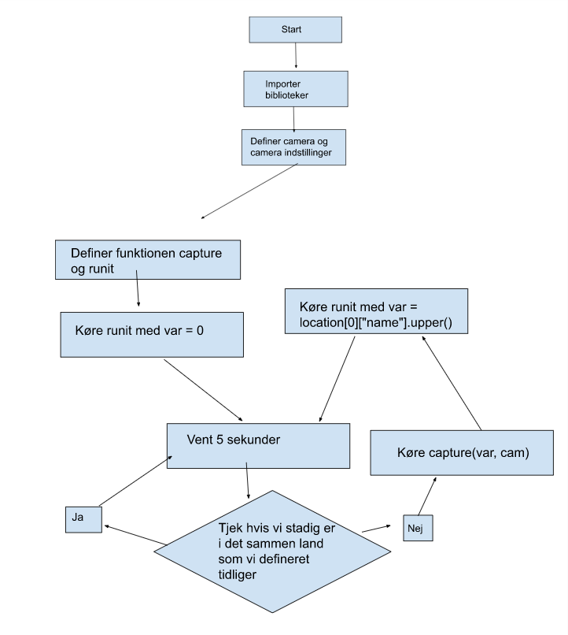
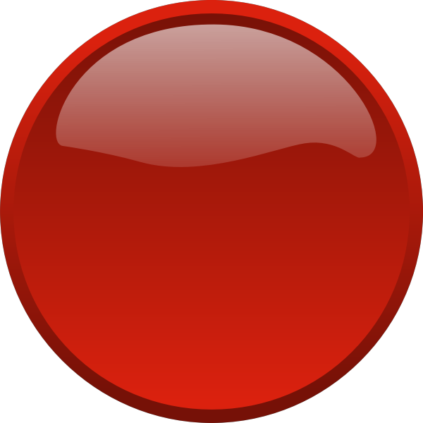

Home
Kode
It sikkerhed
Astro Pi
Astro-Pi
Projektbeskrivelse Vi havde til hensigt at foretage en NDVI-analyse af flere store byer og måle områder deri med grøn vegetation for at finde ud af, hvilke byer der er mest grønne. Vi ville gøre dette ved at tage nær-infrarøde billeder med et nær-infrarødt kamera kontrolleret af astro-pi-computeren, når vores reverse geocoder fastslår, at ISS befinder sig over en by, og derefter udføre NDVI-analyse på disse billeder med online-værktøjet Infragram. Desuden ville vi beregne det areal, som hver pixel i billederne dækker, og tælle antallet af pixels, der indeholder vegetation, med værktøjet ImageJ, for derefter at bestemme arealet med grøn vegetation. Endelig ville vi se på statistikker vedrørende indbyggernes sundhed og velvære i de analyserede byer i håb om at finde en sammenhæng mellem grønne områder og sundhed.
Specifikationer Mht. billedtagning er specifikationerne tilstrækkelige til at besvare vores spørgsmål delvist. Vi skal til NDVI analyserne bruge hjælp fra eksterne programmer. Vi kan til gengæld kun fotografere byer som ISS passerer direkte henover, da kameraet ikke kan drejes.
Vores sensor var et kamera, som vi havde forbundet til vores raspberry pi. En testmåling bestod derfor blot af at tage et billede. Det gjorde vi dog på kontrollerede tidspunkter, idet vi havde skrevet en kode, der sørgede for at kameraet tog billeder med intervaller, frem for når det var over en bestemt by, for at skabe et scenarie tilsvarende det i vores idé.
def runit(var): coordinates = ISS.coordinates() coordinate_pair = ( coordinates.latitude.degrees, coordinates.longitude.degrees) location = reverse_geocoder.search(coordinate_pair) print(location[0]["name"].upper()) time.sleep(5) if var != location[0]["name"].upper(): var = location[0]["name"].upper() capture(var,cam) runit(var) else: var = location[0]["name"].upper() runit(var)
I denne kodestump definerer vi en funktion, som finder ud af hvor ISS er, som vi kalder runit. Først definerer vi coordinates som ISS.coordinates(), hvorved vi kan finde koordinaterne fra ISS. I den næste linje kode sætter vi coordinates_pair til at være lig (coordinates.latitude.degrees,coordinates.longitude.degrees). Nu har vi koordinaterne fra ISS. For at finde ud hvilken by ISS er over, skal vi sætte dette koordinatpar ind i reverse_geocoder. Den data som reverse_geocoder giver tilbage er både i en dictionary men også i en liste, hvilket vil sige, at vi skal først åbne listen for derefter at kunne bruge dictionary. Derudover får vi den til at skrive landets navn i store bogstaver, for at gøre det nemmere at læse. Derefter får vi funktionen til at vente i 5 sekunder. Dette gør vi for at se, om ISS stadigvæk er i det samme land. Hvis det ikke er tilfældet, så definerer vi var som det nye land, og så starter vi funktionen capture (var, cam). Den tager et billede af det nye land, og derefter startes runit(var) igen. Hvis vi er i det samme land, så definerer vi var som det land vi er i og kører runit(var) igen.


Tryk på den røde knap for at downloade programmet